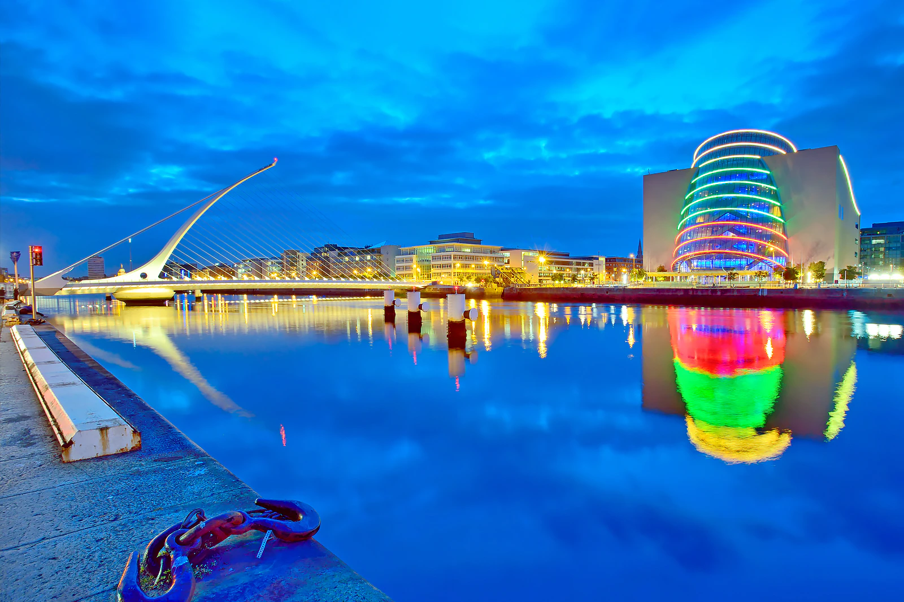
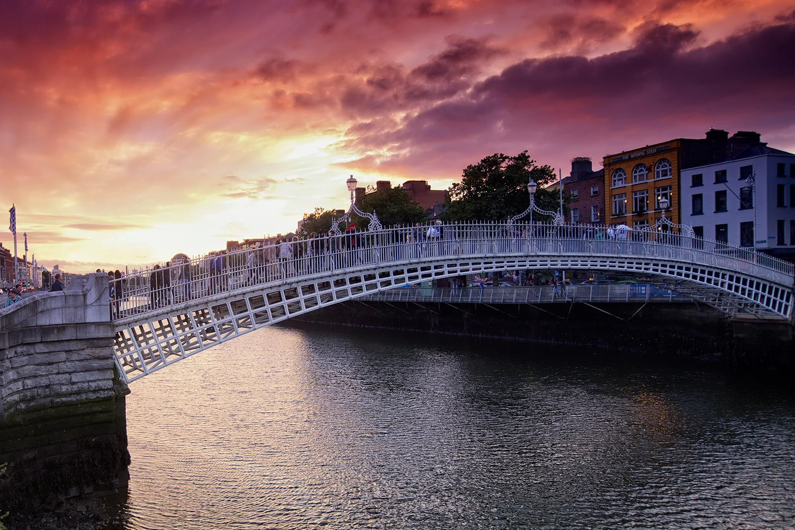
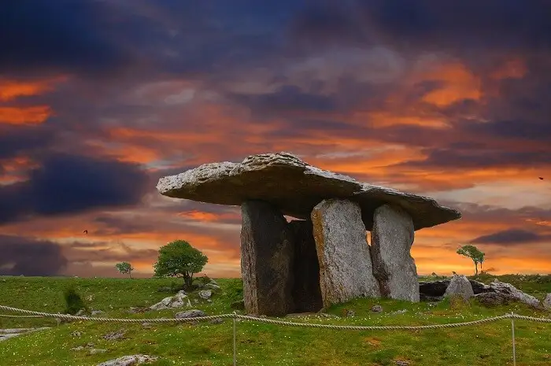
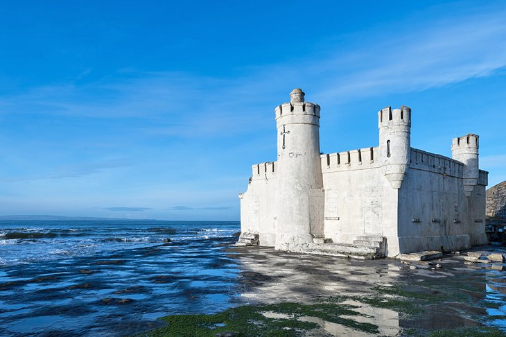
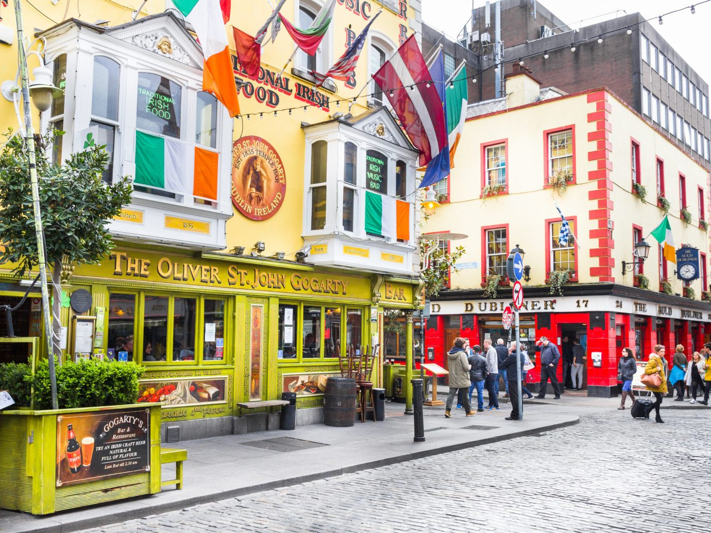
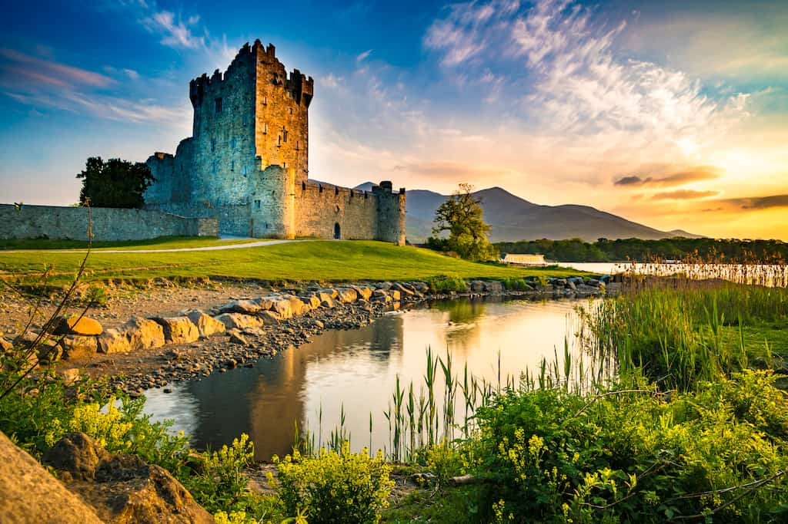

Get a €8.49 Discount for Travel to the City Center
Advance booking only
Edinburgh is the city where J.K. Rowling wrote most of the Harry Potter books, and where she found the most inspiration. Schools that look like castles, colourful streets with quirky shops, and a beautiful city that seems haunted by its dark past.
2for1 Admission €8.49 Barry Mill
Printed paper Voucher Required
Peaceful Barry Mill might be a haven of tranquillity now, but it was once the beating heart of a rural community – supplying food, providing a place for trade and gossip, and witnessing the transition from a rural to an industrial society.
2for1 Admission €8.49 Wavers Cottage
Printed paper Voucher Required
At this traditional Kilbarchan weaver’s cottage we’ll transport you back to a time when hand-woven textiles were the pride of Scotland’s weaving industry.
2for1 Admission €14.50 Crathes Castle
Printed paper Voucher Required
Standing against a backdrop of rolling hills and set within its own glorious gardens, Crathes Castle is every inch the classic Scottish tower house – and a fantastic day out for all the family.
Visit the Poolok House and get a €8.50 Discount
Printed paper Voucher Required
Be amazed by the vast servants’ quarters. Discover an impressive collection of Spanish art, as well as works by Raeburn and Guthrie. Enjoy delicious home baking and other delights in the Edwardian Kitchen café.
*From Pollokshaws West station, turn left when leaving the station and its a 20 minute walk to Pollok House.*
2for1 Admission €14.50 Brodick Castle
Printed paper Voucher Required
Teeming with history and surrounded by mountains, Brodick is every inch the quintessential island castle. The present building was fashioned in 1844, but the seat dates back centuries to when its strategic position overlooking the Firth of Clyde made Brodick a fortress to be reckoned with.
Special Offer #1
Get 10% off your first travel when you sign up for our newsletter!
Special Offer #2
Subscribe now, and get one 50% off on all travels today!
Special Offer #3
Get free travels when you have used our cards for more than 6 months